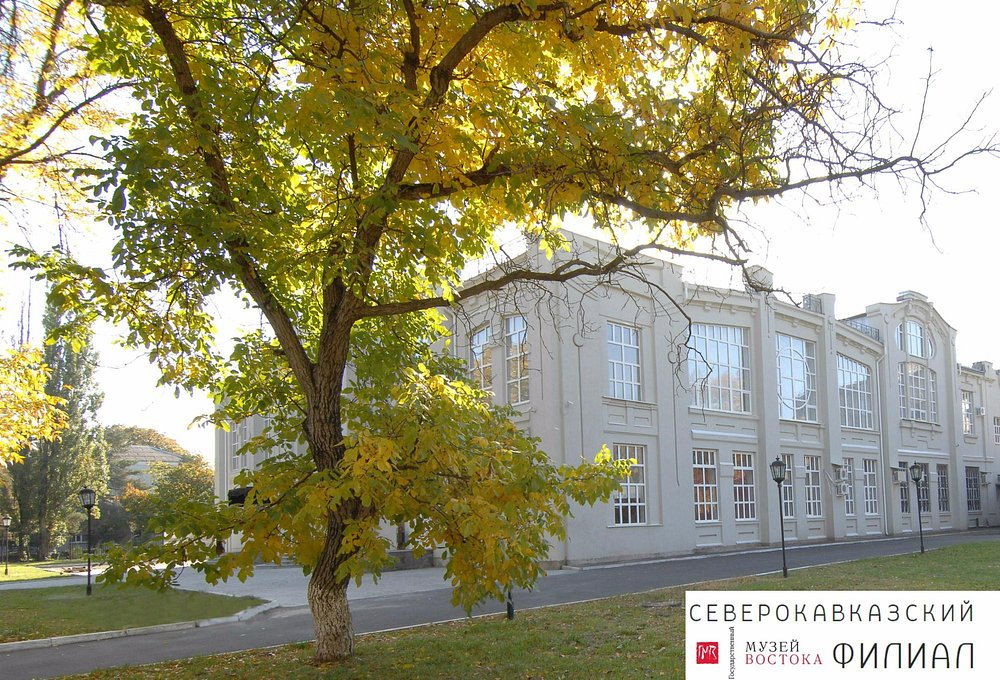

Майкоп – один из самых красивых и благоустроенных городов Северного Кавказа, административный и культурный центр Республики Адыгея.До апреля 2017 года был центром Красногорского района. Население в городе — 193 127 чел.
Официальный сайт| Район | Население |
| Западный Район | 3888 |
| Черёмушкин | 84 |
| Михайлово | 89 |
